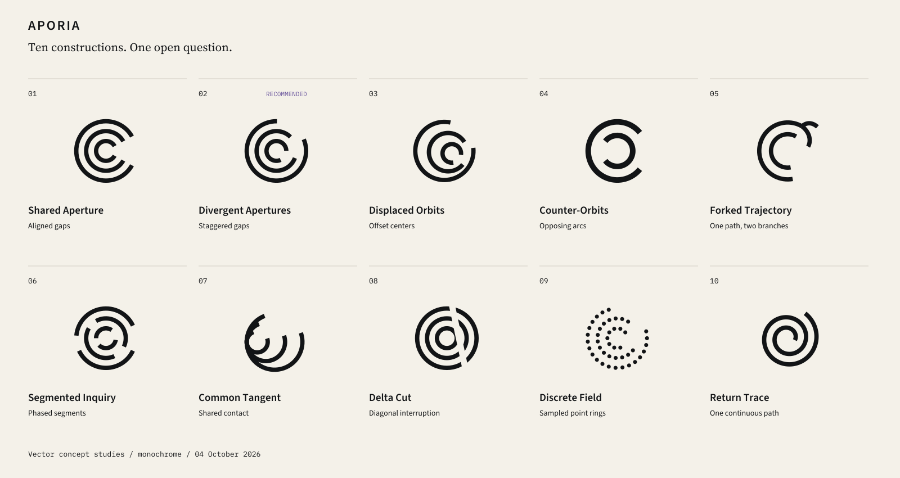
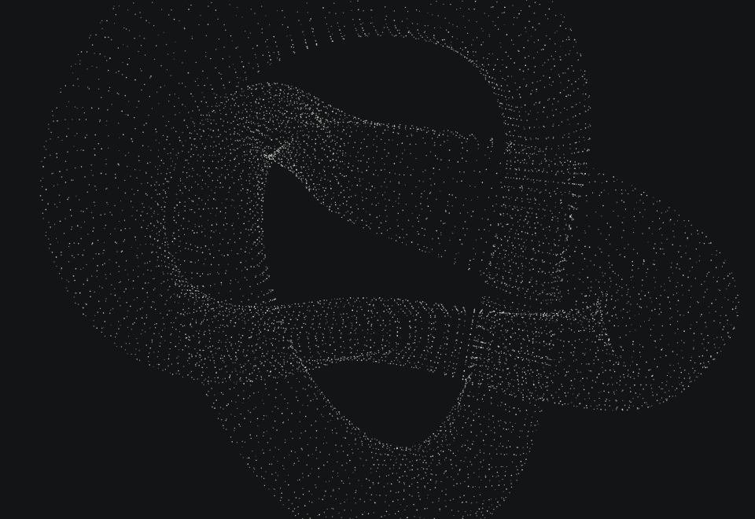
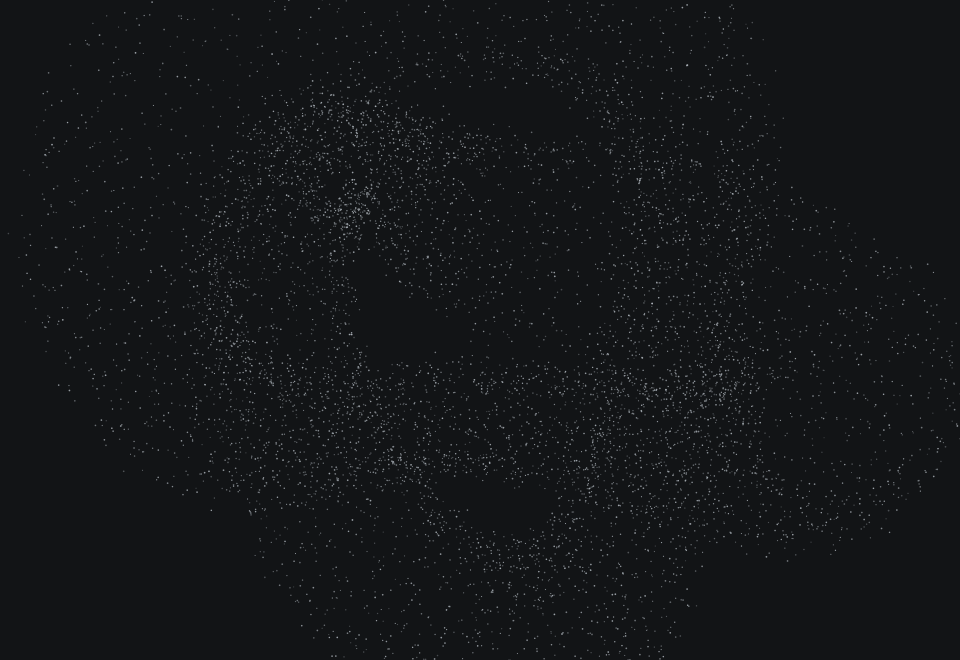
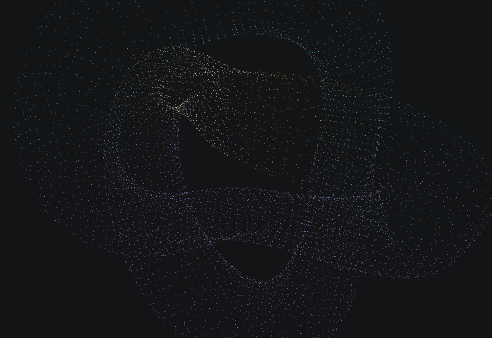
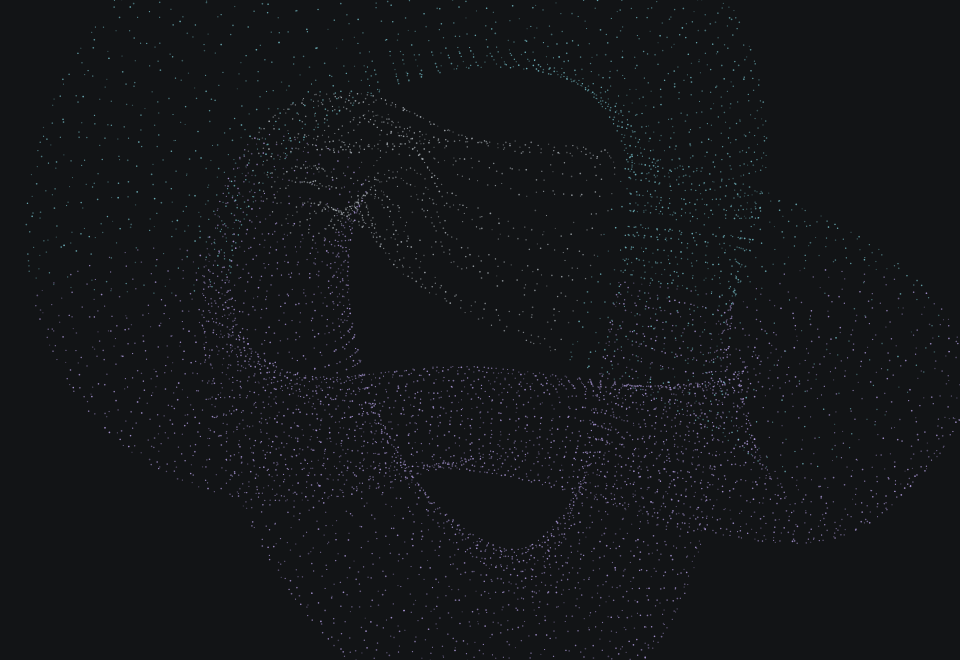
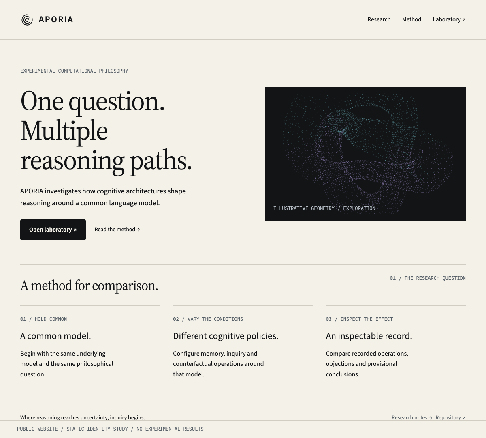
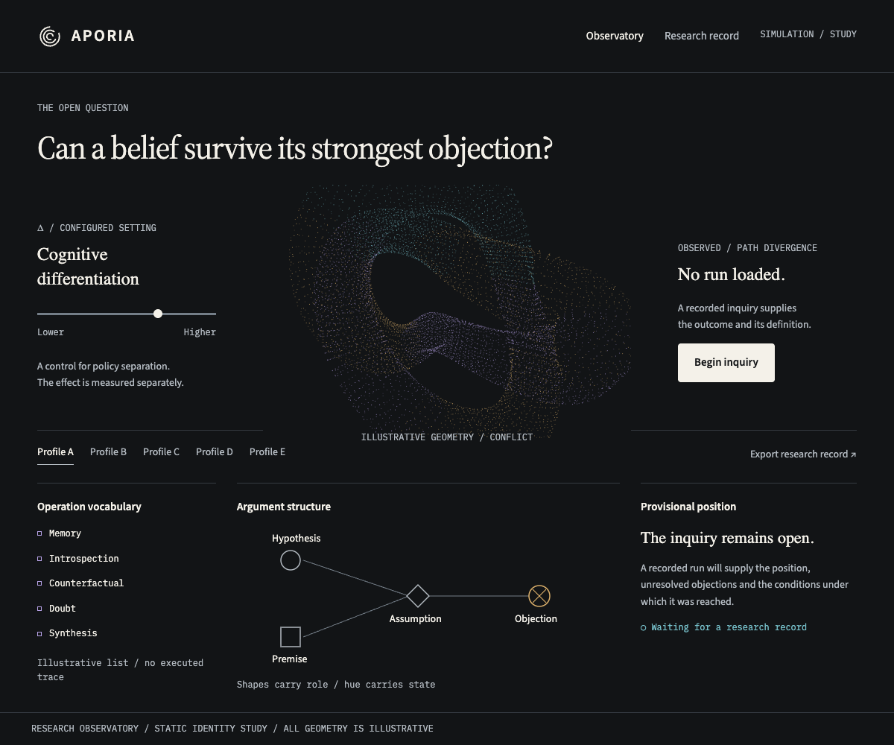
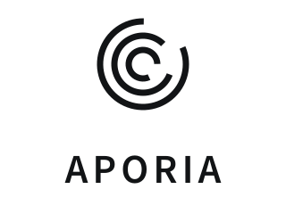
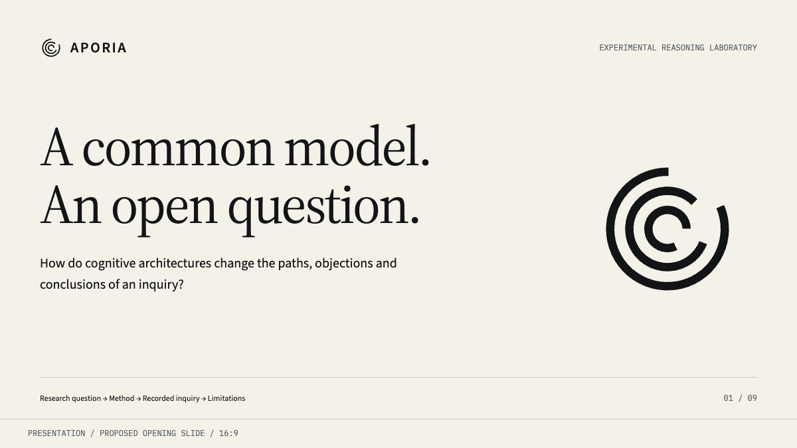

Brand essence
The productive impasse. An unresolved question is a place to begin a more disciplined inquiry. APORIA gives that inquiry a computational structure: a common model, differentiated cognitive policies, persistent traces and positions that can be challenged.
Purpose: make differences in reasoning available for inspection.
Research question: can different cognitive architectures around the same language model produce materially different trajectories, objections and conclusions?
Brand promise: make the conditions, paths and limits of an inquiry legible. The identity promises inspectability; the research determines what the experiment establishes.
Core belief: intellectual progress can begin with a precise account of what remains unresolved.
Internal creative phrase: structured divergence. Use it to judge design decisions, rather than printing it on every surface.
Brand positioning
Category: experimental computational philosophy. Public descriptor: an experimental reasoning laboratory. The category is a proposed positioning, not a claim that APORIA has established a new scientific discipline.
Positioning statement: for researchers, philosophers and engineers investigating how reasoning depends on architecture, APORIA is an experimental research instrument that compares cognitive policies around a common language model through explicit operations, memory, counterfactual tests and inspectable argument traces.
The distinction is methodological: the underlying model is held common while architectural conditions are varied. Differentiation is configured; divergence is observed. A change in path, an objection and a change in conclusion are different outcomes and must remain distinguishable.
| Audience | First thing to communicate | Evidence to put beside it |
|---|---|---|
| Philosophers | Objections and assumptions are inspectable | Argument relations, unresolved questions and provisional positions |
| Researchers | Conditions and outcomes are separated | Common model, policies, budgets, seeds where supported and repeated runs |
| AI engineers | Cognitive operations have explicit structure | Architecture diagrams, controller traces and versioned exports |
| University and conference audiences | The question is understandable | One experiment, one controlled variable and its limitations |
| Hackathon judges | A real instrument can be demonstrated | An actual run, an inspectable trace and an honest result |
Short introduction: “APORIA studies how different cognitive architectures reason about the same question.”
Long introduction: “APORIA is an experimental AI philosophy project. It varies cognitive policies around a common language model and records the resulting operations, objections and provisional conclusions. Its aim is to investigate when architectural differentiation produces meaningful differences in reasoning.”
Avoid implying independent minds, consciousness, verified cognition or a demonstrated diversity result. Describe generated explanations as recorded explanations or argument traces; they are not privileged access to a model’s internal reasoning.
Brand personality
APORIA is exacting, curious, composed, open and quietly unconventional. It behaves like a serious investigator who welcomes a good objection.
Exacting means naming conditions and defining quantities. Curious means keeping live questions visible. Composed means avoiding spectacle around a result. Open means showing a failed test or unresolved objection alongside a provisional position. Unconventional means allowing an incomplete form to serve as the central emblem.
The emotional register is productive tension: a calm instrument examining a difficult question. Mystery comes from unresolved structure and generous negative space. Labels, controls and evidence remain explicit.
Visual principles
- A shared center; differentiated paths. Repeat a common geometric origin with controlled variations. The variation must have an identifiable rule.
- Keep the opening. Incomplete loops represent the possibility of further inquiry. Do not finish the logo as a success animation.
- Structure precedes atmosphere. Use a readable grid, measured alignments and strong typography before adding a field of points.
- Let two surfaces coexist. Paper serves essays, methods and papers. Obsidian serves the live observatory and close inspection.
- Color has a job. An accent indicates a state or annotated event. Geometry and a text label carry the same meaning.
- Depth belongs to the particle object. Interface chrome stays flat: fine rules, solid fills and small radii.
- Evidence has provenance. Distinguish illustration, simulation and a recorded run in the visual itself.
Use a 4 px base spacing unit. Product spacing: 8, 12, 16, 24, 32 and 48 px. Editorial spacing: 64, 96 and 128 px. A 12-column desktop grid has 24 px gutters; a four-column mobile grid has 16 px gutters. Public text columns stay around 60–72 characters. A measured layout should feel inhabited by ideas, rather than covered in ornamental coordinates.
Logo strategy
Build an abstract emblem from open circular paths, with a separate readable wordmark. Keep the center empty. There is no nucleus, eye, brain, orbiting satellite or literal Greek symbol inside it.
The symbol expresses a common condition and different limits. It is a metaphor for the research question, rather than a chart of the architecture. Three rings are a graphic reduction; they do not represent a fixed count of reasoners, functions or model layers.
Recommended wordmark: APORIA in uppercase Source Sans 3 Semibold, with approximately +0.11 em tracking as a starting point. The supplied vector lockup has outlined letters and fixed spacing. Keep the A conventional. An inserted Δ would blur the difference between the project name and a research parameter.
The emblem remains fixed across runs. Δ can alter a separate generative field; it never changes the brand mark. Monochrome is the master identity. State colors belong to the research surface.
Evaluate concepts in this order: silhouette at 24 px, distinctiveness in monochrome, relevance to the actual research, stability in print, then compatibility with generative imagery. The tradeoff is intentional: the strongest small symbol wins over the most elaborate philosophical explanation.
Ten logo concepts
The supplied SVGs are actual vector concept drawings. Every concept belongs to the ring family, but changes its construction: gap alignment, gap phase, center displacement, opposition, branching, segmentation, tangency, negative space, point sampling or continuity.

01. Shared Aperture
Visual: three concentric C-shaped rings with one aligned opening to the right. Meaning: inquiry can pass through a shared boundary; even a structured argument remains open. Fit: it gives aporia a clear physical absence without literal philosophical imagery.
Strengths: the simplest silhouette, easy monochrome reproduction, strong small-size rhythm. Weaknesses: it expresses commonality more than divergence and risks looking like a generic broadcast symbol.
Scaling: favicon — reduce to two open rings at 16 px; app icon — three rings on a plain square field; header — unusually clear beside a compact wordmark; research — reliable in grayscale and small figure credits. Verdict: useful baseline, less distinctive than the recommendation.
Download SVG
02. Divergent Apertures — recommended
Visual: three concentric rings with equally wide openings centered at −56°, −12° and +32°, from outer to inner. Meaning: a shared origin permits different points of departure; no path encloses a final answer. Fit: common model, differentiated architectures and unresolved inquiry become one reduced form.
Strengths: simple construction, a characteristic stepped opening, intact monochrome identity, a natural relationship to phase and divergence. Weaknesses: can resemble a circular activity indicator if rotated or animated; fine gaps need a dedicated tiny master.
Scaling: favicon — two rings with widened, staggered openings; app icon — the three-ring master, centered with generous space; header — stable at 28–40 px; research — clean black vector at 8 mm or larger. Verdict: best balance of recognizability, meaning and longevity.
Download SVG
03. Displaced Orbits
Visual: three incomplete circles with small progressive lateral center offsets and different openings. Meaning: common starting conditions are reframed by different cognitive structures. Fit: differentiation is spatially evident even when the paths remain circular.
Strengths: expresses divergence directly; provides a strong compositional rule for posters and fields. Weaknesses: offsets can look accidental; narrow separations weaken when reduced.
Scaling: favicon — two offset circles, larger separation; app icon — all three at a controlled offset; header — use at 32 px or larger; research — strong as a method illustration, less reliable below 10 mm. Verdict: second choice, and a good secondary graphic grammar.
Download SVG
04. Counter-Orbits
Visual: two substantial nested open rings whose openings face opposing directions. Meaning: a proposition and its challenge inhabit the same field without becoming identical. Fit: translates adversarial exploration into balanced opposition.
Strengths: strong at small size, memorable orientation, particularly suitable for an objection tool. Weaknesses: may imply only two sides or a binary worldview; opposing arcs can resemble synchronization or exchange icons.
Scaling: favicon — two thick arcs survive at 16 px; app icon — retain two arcs and an empty center; header — clear with a wordmark; research — prints cleanly but needs the category descriptor. Verdict: strong sub-tool emblem, narrower than the whole project.
Download SVG
05. Forked Trajectory
Visual: a long circular path splits into two outward continuations, with a shorter inner arc preserving the ring family. Meaning: one inquiry produces alternative developments. Fit: counterfactual and hypothesis branching become a legible action.
Strengths: active, distinctive and useful for diagram transitions. Weaknesses: suggests a temporal sequence more than independent architectures; the branch can read as circuitry or an antenna.
Scaling: favicon — use the outer fork only; app icon — keep the fork and inner arc; header — needs 36 px for the complete form; research — useful in architecture diagrams and process figures. Verdict: excellent function icon, less suitable as the master mark.
Download SVG
06. Segmented Inquiry
Visual: three circular bands broken into a few unequal arc segments, with breaks out of phase. Meaning: partial arguments can form structure without becoming complete. Fit: reflects argument graphs, missing premises and unresolved relations.
Strengths: a rich modular system, good animation and diagram potential, precise rather than organic. Weaknesses: more components to recognize; can resemble a gauge or loading interface.
Scaling: favicon — collapse to two rings with one interruption each; app icon — retain a maximum of six visible arc segments; header — best at 40 px or above; research — strong section device, visually dense in small footers. Verdict: supporting pattern, rather than primary emblem.
Download SVG
07. Common Tangent
Visual: three unequal open circles approach one common tangent at the lower-left edge. Meaning: distinct frameworks can touch a common question without sharing the same trajectory. Fit: conveys overlap and differentiation simultaneously.
Strengths: distinctive asymmetric silhouette; the shared contact makes the underlying relationship explicit. Weaknesses: a locally heavy junction; unequal circle sizes can imply a hierarchy of reasoners.
Scaling: favicon — two circles and a clarified junction; app icon — all three with optical spacing corrections; header — 36 px minimum; research — attractive on a cover, less dependable as a tiny citation mark. Verdict: thoughtful but needs more optical refinement.
Download SVG
08. Delta Cut
Visual: three near-complete rings crossed by one narrow diagonal negative-space slit. The stepped interruption hints at a wedge without drawing a literal Δ. Meaning: a controlled intervention changes how a shared system is traversed. Fit: connects directly to differentiation as an experimental parameter.
Strengths: crisp construction, strong monochrome presence, a distinctive diagonal axis. Weaknesses: the small center cuts can disappear; the wedge is an abstract echo of Δ, not an immediately readable triangle.
Scaling: favicon — widen the cut and use two rings; app icon — three bands with a clean slit; header — reads well at 32 px; research — strong in diagrams and labels, though thin cuts require careful printing. Verdict: credible alternative with a more engineered tone.
Download SVG
09. Discrete Field
Visual: three sampled rings made from solid points, with missing points and staggered gaps. Meaning: coherent structure can emerge from discrete contributions while remaining incomplete. Fit: the most direct bridge to the particle engine.
Strengths: close relationship to the product’s visual medium; excellent generative and motion potential. Weaknesses: weak small-size recognition; point counts compete with simplicity; possible association with fingerprint or sensor graphics.
Scaling: favicon — replace points with the solid Divergent Apertures micro mark; app icon — coarse point sample only at large sizes; header — use the solid master; research — good cover imagery, poor as a small author mark. Verdict: secondary imagery, not an independent production logo.
Download SVG
10. Return Trace
Visual: one open, circular spiral makes several partially concentric turns and ends without closing. Meaning: revisiting a question after memory or reflection is a different pass through it. Fit: gives metacognition and persistent memory a simple emblem.
Strengths: one continuous gesture, easy to sketch and recognize, strong editorial applications. Weaknesses: suggests one evolving reasoner rather than multiple architectures; can imply a vortex or inward collapse.
Scaling: favicon — two turns with a wider open ending; app icon — full trace with an empty center; header — clear at 28 px; research — robust in monochrome, particularly suitable for a memory module. Verdict: elegant, but less faithful to the project’s central comparison.
Download SVG
Decision
Choose 02, Divergent Apertures as the identity. Keep the displacement rule from 03 for large generative compositions and the point sampling of 09 for particle illustrations. Supporting rules are not alternate logos. Use one recognizable mark everywhere.
Typography system
change the path?
Primary / editorial: Source Serif 4. Use Regular for questions, essays and hypotheses; use its Display optical cut for large editorial headings. Its optical-size system makes it appropriate for both reading and display. The judgment is functional as well as aesthetic: it has the gravity of a book face without relying on fragile fashion typography. Official Adobe specimen
Secondary / interface: Source Sans 3. Use Regular and Semibold for navigation, controls, explanatory copy and the wordmark. Its humanist construction softens the instrument without becoming expressive UI decoration. Adobe designed it for interface environments. Official family
Mono / research: IBM Plex Mono. Use Regular for parameters, timestamps, identifiers, operation labels and tabular readouts. Keep extended explanations in the sans. Its narrow role limits the recognizable IBM association to functional typography. Official family and license
| Role | Family / weight | Desktop size / line height | Rules |
|---|---|---|---|
| Cover / hero | Source Serif 4 Display / 400 | 64–88 px / 1.05–1.12 | −0.025 em; sentence case; 2–3 lines |
| Editorial title | Source Serif 4 Display / 400 | 40–48 px / 1.15 | −0.02 em; mobile 32–36 px |
| Research question | Source Serif 4 / 400 | 28–36 px / 1.25 | Normal tracking; mobile 24–28 px |
| Essay / provisional position | Source Serif 4 / 400 | 19–21 px / 1.6 | 60–68 characters per line |
| Interface / explanatory body | Source Sans 3 / 400 | 16 px / 1.5 | Mobile inputs remain 16 px |
| Compact control / table | Source Sans 3 / 400–600 | 14 px / 1.4–1.5 | Increase row space before reducing type |
| Readout / research label | IBM Plex Mono / 400 | 12–14 px / 1.5 | Tabular numerals; define every abbreviation |
| Wordmark | Source Sans 3 / 600 | Size follows lockup | Uppercase; fixed supplied letter spacing |
Cormorant Garamond is too delicate for the role of workhorse reading face; reserve that kind of contrast for a different brand. Inter remains a capable alternative, but Source Sans 3 forms a calmer relationship with the editorial family. The implemented Newsreader / Manrope pair is a credible existing foundation; this proposal deliberately chooses Source for stronger consistency between long-form research and interface reading. The choice is not based on claiming those existing fonts are inferior.
Use italics for a proposition or an occasional editorial emphasis. Never set controls in italic. All-caps belong to APORIA and short section codes, with +0.08 to +0.12 em tracking; prose and control labels use sentence case. Do not use tiny, widely spaced type to manufacture sophistication. Use true typographic punctuation and keep mathematical symbols in their semantic role.
The specimen bundles static font files with their OFL license texts so it works offline. The large serif uses the Display cut; reading uses the regular cut. A later product integration can adopt variable optical sizing. Preserve license notices when redistributing fonts.
Color system
Obsidian#121416
Paper#F4F1E9
Iris#B7A2E8
Cyan#79C5CF
Amber#DDB16B
Primary: Obsidian #121416 and Paper #F4F1E9. These carry the identity even when all accents disappear.
Secondary neutrals: Instrument surface #1B1F23, paper surface #E9E5DB, graphite #383D43, dark secondary text #B4BBC2 and paper secondary text #596168. Quiet rules use #353B42 on dark and #D1CDC3 on light; an interactive boundary uses the stronger #747E88 on dark or #76736C on light.
State accents have paired values for two surfaces. The bright value belongs on obsidian; the deeper value belongs on paper. Do not reuse a bright accent for small text on paper.
| Role | On obsidian | On paper | Meaning |
|---|---|---|---|
| Iris | #B7A2E8 | #65509A | Reasoning operation or selected reasoning trace |
| Cyan | #79C5CF | #24636C | Exploration, a branch being opened |
| Amber | #DDB16B | #805B22 | Conflict or an emergent candidate requiring inspection |
| Chalk / graphite | #F4F1E9 | #383D43 | Concentration, neutral structure and confirmed selection |
| Muted text | #B4BBC2 | #596168 | Uncertainty annotations and secondary context |
Uncertainty is expressed through geometry and a numeric label, not a new hue. Divergence is expressed through path separation, not a fourth accent. Rejection is expressed through an ×, a broken path and a retained textual reason, not an additional red family. Insight uses a brief amber locus that settles to chalk, with “Candidate insight” or “Surviving test” describing what actually occurred.
Amber therefore belongs to an inspectable event family. Conflict uses opposing geometry plus “Conflict”; insight uses a local connection plus “Candidate insight”. The label and geometry disambiguate the shared hue. Neither is presented as a universal success signal.
Budget accents to approximately 10% of a typical public composition. Most views use one accent at a time. A particle object may use two spatially separated state accents when the data warrants it. Keep graph node types neutral and distinguish them by shape and label; cognitive state colors must not also silently encode node type or reasoner identity.
Text: Paper on Obsidian and Obsidian on Paper for primary text. Use the paired secondary text colors for metadata. Backgrounds: Paper for reading, Obsidian for observation, instrument surface only for grouped controls. Actions: Paper fill with Obsidian text on dark; Obsidian fill with Paper text on light. Focus: Cyan on the relevant surface, a 2 px outline with 3 px offset.
The supplied CONTRAST.md contains calculated sRGB ratios for every prescribed text, state and boundary pairing. Standard-sized text must reach 4.5:1; large text can use 3:1. Meaningful control boundaries and graphic elements must reach 3:1 against adjacent surfaces. Decorative fine rules are not control boundaries. Labels accompany color, and opacity must not reduce a prescribed functional contrast. W3C text contrast · W3C non-text contrast
Particle / generative visual language






One object, many conditions. Keep the current folded, point-based topology as the characteristic medium. Its cavities, crossings and asymmetric paths provide the complexity that the flat emblem leaves out. Do not replace it with a generic spherical orb.
The logo is the concise signature; the particle object is a field for observing configured or estimated state. They share open paths, circular recurrence, visible gaps and controlled asymmetry. Do not literally extrude the logo into the object. Build quiet companion graphics by sampling open curves and shifting their phase or center under a declared rule.
| State | Geometric behavior | Color and label | Interpretation rule |
|---|---|---|---|
| Exploration | Extend a local fold; open additional paths | Cyan, “Exploration” | Route or curiosity proxy drives expansion |
| Concentration | Narrow local spread; increase coherence | Chalk, “Concentration” | Attention changes distribution, not claimed intelligence |
| Reasoning | Stable, legible recurrent paths | Iris, operation name | The active operation is named |
| Conflict | Two local folds pull in opposing directions | Amber, “Conflict” | Show the objection or contradiction behind the state |
| Uncertainty | Increase bounded dispersion; preserve the scaffold | Neutral, “Uncertainty” plus value | Display the definition; a proxy is not a calibrated probability |
| Divergence | Increase separation between comparable trajectories | Neutral paths with direct profile labels | Distinguish configured Δ from observed path differences |
| Insight | A short-lived local connection stabilizes | Amber to Chalk, “Candidate insight” | A candidate is not proof; link its test or support |
| Rejection | Break a local segment while retaining its trace | Muted, × and “Rejected” | Keep the failed assumption and reason inspectable |
No automatic equation between more turbulence and better cognition. High Δ can produce greater separation, similar results or an inconclusive result. A data-bound view reports the measured outcome even if the image becomes less dramatic.
For explanatory graphics, label Illustrative geometry. For manual controls, label Simulation. For an actual run, show run ID, model/version, policy configuration, operation and the provenance of each metric. Numeric labels in the brand samples describe design conditions only.
Motion: slow bounded evolution, rather than constant orbiting. Let state changes settle over approximately 700–1200 ms; draw attention to a candidate event once, without a flash. Avoid ambient spinning of the logo, random particle eruptions and repeated pulses. Provide pause, reduced-motion static geometry and a text summary of the state. The interface remains usable when the particle renderer is unavailable.
Public imagery uses a single topology with an empty surrounding field, or a small comparison of declared conditions. No lens flares, atmospheric gradients, starfields or fabricated performance measurements. Grayscale exports retain geometry and labels.
Iconography principles
Use a restrained line family on a 24 px grid, generally with 1.5 px strokes and restrained corners. Icons need a readable action, not a metaphorical explanation. Keep a few project-specific symbols for branch, memory, objection and counterfactual operation; use a consistent established family for generic interface actions.
Suggested grammar: branch — a path with a Y fork; memory — a returning path beside a short stack; metacognition — two nested inspection frames; counterfactual — a solid path and an alternate dashed path; objection — an interruption mark on a connector; uncertainty — an open interval with a question label; argument graph — a minimal three-node relation; inspect — a conventional magnifier; export — a conventional outward arrow.
Node types should pair shapes with words: hypothesis as an outlined circle, premise as a square, assumption as a diamond, objection as a crossed connector, evidence as a filled square, and question as an open circle plus “?”. At dense sizes, use accessible text labels or an adjacent table. Do not rely on shape alone if it becomes illegible.
Keep Δ reserved for the differentiation parameter. The APORIA emblem is never a play button, loading spinner or cognitive operation icon. Minimum clickable area is 44 × 44 px even when the drawing is 20–24 px.
Tone of voice
Lead with the question, describe the method, qualify the finding. APORIA uses concrete nouns and active verbs: configure, compare, inspect, challenge, trace, test, revisit, record. “Provisional” is a useful word when the position really is provisional; it need not weaken every sentence.
| Situation | Recommended wording | Reason |
|---|---|---|
| Start a run | “Begin inquiry” | An intelligible research action |
| Differentiation control | “Cognitive differentiation · Δ” | Names the configured variable |
| Help text | “Δ changes the separation between cognitive policies. Compare the recorded trajectories to assess the effect.” | Separates control from outcome |
| Incomplete result | “Two objections remain unresolved.” | Specific and actionable |
| Agreement | “The profiles reached similar positions under these conditions.” | Agreement is a legitimate result |
| Failed test | “This counterfactual challenges assumption A3.” | Identifies what failed |
| Export | “Export research record” | Describes the object being saved |
| Inference failure | “Generation stopped. The recorded steps are available for inspection.” | Explains the consequence without drama |
Use “cognitive profile” or “reasoning architecture” before “mind”. Prefer “tests a hypothesis” to “discovers truth”. Prefer “recorded path” to “thought process”. A researcher should be able to quote the interface without translating promotional language.
Tagline exploration
A slogan is optional. Keep the functional descriptor in the header and choose an editorial line only where it earns its space.
| Candidate | Strength | Limitation | Decision |
|---|---|---|---|
| “Where reasoning reaches uncertainty, inquiry begins.” | Closest to the name and central belief; calm | Long for a header | Recommended manifesto line |
| “Same question. Different paths.” | Clear, memorable and easy to visualize | Can sound like a promise that every run diverges | Use for explaining experimental conditions |
| “Reasoning under uncertainty.” | Precise research territory | Broad; limited distinctiveness | Good descriptor for a paper or talk |
| “Structured divergence.” | Ownable creative territory; very concise | Requires explanation | Internal direction, occasional section title |
| “Explore what survives doubt.” | Active philosophical invitation | Implies testing can establish more than it may | Secondary editorial line with method context |
| “Different minds. Same question.” | Easy to remember | Anthropomorphic and implies independent minds | Reject |
| “Where reasoning breaks, inquiry begins.” | Strong drama and aporia association | Frames uncertainty as a malfunction | Reject as the master line |
| “A common model. An open question.” | Methodological and quiet | Less emotionally memorable | Recommended research-deck opening |
Choice: public descriptor, “An experimental reasoning laboratory.” Editorial line, “Where reasoning reaches uncertainty, inquiry begins.” Keep them separate. There is no need to squeeze both into the logo lockup.
Website art direction

Use a paper-first public journal that opens into an obsidian observatory. This choice makes philosophical and methodological content hospitable to reading, while giving the computational object a distinctive place. The laboratory itself remains dark by default.
Desktop structure: a slim APORIA lockup at upper left; Research, Method and Laboratory as plain navigation; a large serif question-oriented heading; one concise description; a single primary action, “Open laboratory”. A secondary text link, “Read the method”, gives technical audiences an immediate route to evidence.
Hero copy: “One question. Multiple reasoning paths.” Supporting text: “APORIA investigates how cognitive architectures shape reasoning around a common language model.” Treat the headline as a description of the experiment’s paths, rather than a guarantee of different conclusions.
Below the opening: one dark specimen panel with “Illustrative geometry”; a three-part method showing common model → differentiated policies → inspectable traces; a documented experiment with conditions and limitations; selected research notes; repository and research-record links. Do not manufacture publication logos or unearned affiliations.
Use 64–88 px serif hero type, 16–18 px supporting copy, generous whitespace and thin dividing rules. Keep angular structure with 4 px corner radii on controls and restrained 8 px radii on a contained specimen. Mobile stacks the explanation before the object and offers a static particle rendering if necessary. Avoid a centered SaaS feature-card wall, chat prompt hero, pricing tier grid or animated logo carousel.
Research-dashboard art direction

The laboratory is an observatory with an inspection bench. Preserve the existing priority of particle object first, research inspection below it. Use Obsidian, a modest surface lift and little ornament. Serif is reserved for the active question and a provisional position; dense tools use Source Sans 3 and IBM Plex Mono.
The upper view contains the question, begin/pause controls, the folded particle object, a clearly labeled configured Δ, an observed-divergence readout with its metric name, and a Simulation / Recorded run label. The parameter control must not be visually presented as a measured result.
The inspection bench contains profile tabs, operation history, an argument graph, objections, counterfactual tests and export controls. Compare paths, arguments and conclusions in separate columns. Show units, definitions and unavailable values explicitly. An empty conclusion is “Not available”, rather than zero divergence.
Use neutral profile labels A–E or the actual policy names, direct labels on traces and line-style differences in comparison plots. Hue continues to mean cognitive state. Do not give every profile a rainbow color. A selected profile gets a strong neutral boundary and an explicit label.
Keep run status, provenance and limitations near the result they describe. “Confidence” is a model or controller estimate unless independently calibrated; show that qualification in the definition. Recorded explanations, operation histories and argument graphs are evidence of recorded behavior, not an assertion that latent internal reasoning has been exposed.
Prefer flat sections and tables to nested cards. Tables use at least 14 px text, 40–44 px rows and visible column names. On mobile, the active question and state stay readable; profile navigation scrolls horizontally, and the argument view has a table alternative. The dashboard specimen in this proposal is a static identity study and contains no fabricated experimental scores.
Favicon / app icon direction

Standard master: 128-unit canvas; centered at (64, 64); radii 48, 32 and 16; 7-unit strokes; 66° openings centered at −56°, −12° and +32° from outer to inner. Use butt ends for a cut, architectural character. Standard minimum: 24 px digital or 8 mm print. The center remains empty. The supplied SVG fixes these decisions.
Micro master: two rings, radii 46 and 23 on the same canvas; 10-unit strokes; wider 88° openings with staggered centers. Use only at 16–20 px. It preserves the open, differentiated silhouette while avoiding three hairlines. At 32 px and above, use the standard mark.
Favicon: Paper micro mark on a solid Obsidian field at 16 px; Paper standard mark at 32 and 48 px. Supplied raster sizes are composed into an ICO. An adaptive SVG changes field and mark colors for light/dark browser preference.
App icon: Obsidian square with a Paper standard mark occupying 62.5% of the canvas. Supply a full square master and let the platform apply its mask. No state badge, gradient, orbital glow, rounded-square border or microtype inside the icon.
Header lockup: symbol at 28–40 px with fixed wordmark spacing. A horizontal lockup is the default; a centered stacked version is available for a badge or cover. On a conference badge, use the lockup without a miniature slogan. For a repository avatar use the app icon.
Clear space: minimum half the outer-ring radius around the symbol or lockup, equal to 24 units on the standard master. Treat this as a minimum; public covers use substantially more room. Horizontal lockup minimum: approximately 132 px or 35 mm. Do not scale a complete lockup to a favicon.
Presentation / pitch-deck direction

Use 16:9, an approximately 96 px safe margin on a 1920 × 1080 canvas, serif titles around 56–64 px, sans body around 28–32 px and mono labels at least 20–22 px. Paper carries the explanation; Obsidian carries particle or trace specimens. Make evidence readable from the back of a room.
Recommended sequence: (1) APORIA and “A common model. An open question.”; (2) the research question; (3) what is held common and what varies; (4) the architecture and operations; (5) one real recorded inquiry; (6) a path / argument / conclusion comparison; (7) counterfactuals and unresolved objections; (8) limitations and alternative explanations; (9) the next experiment and requested collaboration.
Use one claim per slide and one diagram at a time. Show the emblem small in a consistent footer, rather than enlarged on every page. Put model, run ID, metric definition and comparison conditions directly under a research figure. A negative or inconclusive result receives the same editorial care as a promising one.
For academic slides and papers, adapt the institution’s document requirements. Keep the logo in a small monochrome credit or project identifier; the emblem is not an academic seal. Figure labels and patterns survive grayscale. Typography suggestions concern APORIA-owned material and do not override a journal’s template.
Do / don’t rules
| Do | Don’t |
|---|---|
| Use a fixed open-ring master | Rotate the emblem as a loader or close it on success |
| Preserve the empty center | Add a brain, eye, spark, nucleus or Δ inside it |
| Lead with a research question | Promise intelligence, truth or guaranteed disagreement |
| Show a controlled comparison | Stage opposing opinions as a diversity result |
| Pair state color with geometry and words | Assign hues to cognition, profiles and node types simultaneously |
| Use paper for reading and obsidian for observation | Make every surface a dark science-fiction dashboard |
| Retain failed and unresolved traces | Fade inconvenient evidence out of the research record |
| Keep labels readable and meaningful | Fill negative space with tiny decorative diagnostics |
| Give particles structure and provenance | Use a generic glowing orb or unexplained turbulence |
| Supply one emblem at the right optical size | Rebuild a new ring symbol for each application |
| Use APORIA consistently in public identity | Alternate APORIA and the provisional Aproria spelling |
| Describe recorded behavior precisely | Claim generated traces reveal the model’s private internal reasoning |
Recommended final direction
Divergent Apertures / the productive impasse. Commit to the three open rings, a conventional tracked APORIA wordmark, Source Serif 4 / Source Sans 3 / IBM Plex Mono, and the Paper / Obsidian foundation. Make Iris, Cyan and Amber semantic resources. Keep the folded particle object as the living expression of the system.
The direction wins because it joins the name, the controlled common origin, the differentiated policies and the unresolved research question. It can be quiet on a paper and spatial in an observatory without changing its identity.
The central tradeoff is reduction: three rings cannot explain the full architecture. That is useful. The symbol supplies recognition; the method supplies explanation; the research record supplies evidence. Extra nodes, labels and particles would make the emblem less dependable without making the science clearer.
Included: a visual brand book; an overview board; ten vector logo concepts and a comparison sheet; standard and micro symbols; outlined horizontal and stacked lockups; favicon and app-icon assets; particle specimens; semantic color tokens; and a calculated contrast report. These are concrete proposal assets, ready for evaluation and later integration.
Next adoption order: establish the public spelling and fixed emblem; apply typography and neutral surfaces; integrate state tokens and legends; then extend the particle and trace system. Before a public identity launch, assess the chosen name and mark against relevant existing projects and marks. This proposal is a design recommendation, not a claim of exclusivity or completed name clearance.
The research standard remains the brand standard: make the question compelling, the method visible and the limits precise.